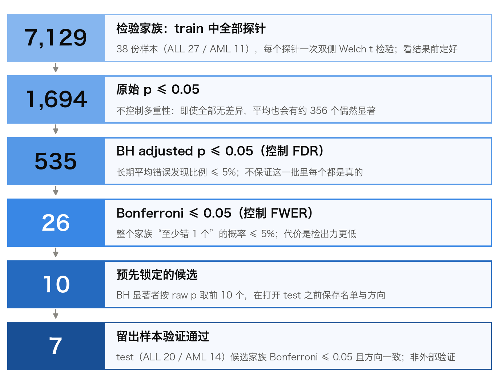
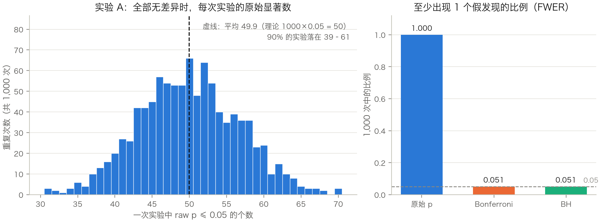
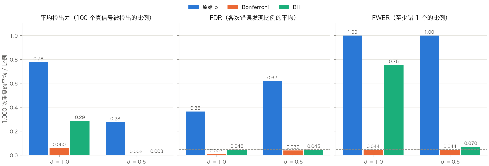
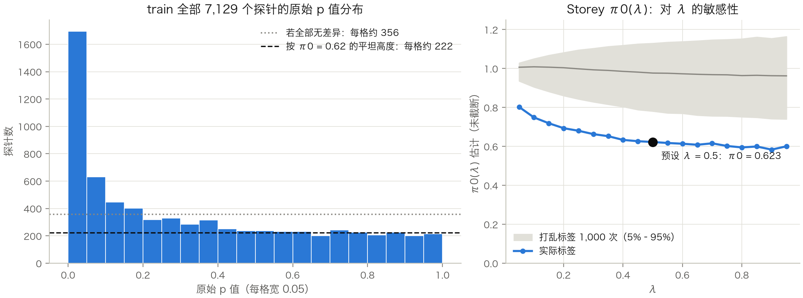
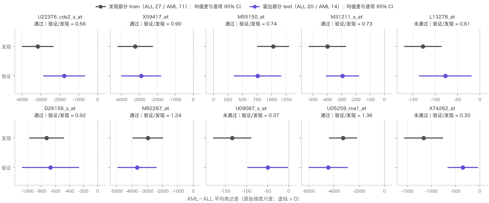
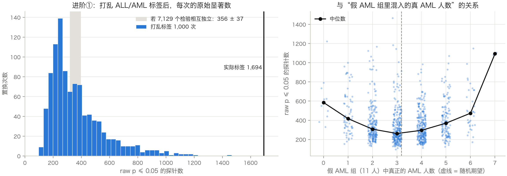

——多重检验校正在 Golub 白血病表达数据上的应用
自选问题： 在 7,129 个探针中，AML 与 ALL 的表达差异"大概有多少"是真的？其中哪几个探针可以被可靠地点名，值得进一步验证？

图 1 解读： 这张图按顺序列出每一步保留的探针数，以及这一步能支持的主张。数量从 7,129 依次减少到 1,694、535、26、10、7，每一步的筛选标准都比上一步更严格。漏斗只表示证据逐级加强，不表示最后 7 个以外的探针没有差异：没被选中，不等于被证明无效应。
| 项目 | 内容 |
|---|---|
| 数据 | Golub 等 (1999) 白血病芯片数据，OpenML 1104 v1；72 个样本 × 7,129 个探针 |
| 文件校验 | leukemia.csv 的 SHA-256 为 915bce00…45156f19，脚本运行时自动核对 |
| 发现部分 train | ALL 27 / AML 11，用于全部筛选与候选锁定 |
| 留出部分 test | ALL 20 / AML 14，只在候选锁定后打开一次 |
| 表达尺度 | 原始芯片强度，28.7% 的值为负，未取对数 |
协议（在运行真实数据 C1 之前写定）：
output/locked-candidates.csv。脚本以"文件已存在就不覆盖、只比对"的方式写入，重跑时不会改动名单。家族要按"实际有过的检验机会"来定义，而不是按"最后报告了多少"。 下表是我对四种常见做法的判断：
| 分析行为 | 实际的检验 / 选择机会 | 应如何预先说明 |
|---|---|---|
| 比较 5 个临床指标 | 5 次检验 | 事先指定 1 个主要终点；其余作为次要终点，一并校正 |
| 分析 4 个亚组 | 至少 4 次（加上总体分析是 5 次） | 事先列出亚组，并报告全部亚组，包括不显著的 |
| 试 3 个模型，只报告最显著的 | 3 条分析路径，属于隐藏的多重性 | 事先固定一个模型，或者把 3 个都报告出来 |
| 看完 7,129 个 p 值后只报告前 20 个 | 7,129 次，不是 20 次 | 在完整家族上校正，见 4.2 节 |
下面这些结论直接从定义推出，用来和后面的实验结果对照：
设计。 沿用课程 notebook 的模拟设置：
这些模拟数据不是 Golub 的实测表达值，作用只是在"知道哪些变量真的有差异"的条件下检验方法本身。
| 方法 | 第一次运行的 R | 1,000 次平均 R | R 的标准差 | R 的 5%–95% 区间 | FWER 估计（MCSE） |
|---|---|---|---|---|---|
| 原始 p | 42 | 49.944 | 6.76 | 39–61 | 1.000 |
| Bonferroni | 0 | 0.051 | 0.22 | 0–1 | 0.051（0.007） |
| BH | 0 | 0.052 | 0.23 | 0–1 | 0.051（0.007） |

图 2 解读： 左图是 1,000 次全零实验中原始显著数的分布，右图是三种方法"至少出现 1 个假发现"的比例。
一个细节： 在全零情形下，每一次实验的 FDP 只可能是 0 或 1，所以 FDR 恰好等于 FWER（表中均为 0.051）。也就是说，BH 在全零时同样控制 FWER；一旦存在真信号，这一点就不再成立。
| δ | 方法 | 平均 R | 平均 V | FWER | FDR | 平均检出力 |
|---|---|---|---|---|---|---|
| 1.0 | 原始 p | 122.5 | 44.8 | 1.000 | 0.364 | 0.777 |
| 1.0 | Bonferroni | 6.0 | 0.044 | 0.044 | 0.007 | 0.060 |
| 1.0 | BH | 30.1 | 1.445 | 0.754 | 0.046 | 0.286 |
| 0.5 | 原始 p | 72.4 | 44.8 | 1.000 | 0.619 | 0.276 |
| 0.5 | Bonferroni | 0.27 | 0.044 | 0.044 | 0.039 | 0.002 |
| 0.5 | BH | 0.41 | 0.072 | 0.070 | 0.045 | 0.003 |

图 3 解读： 三个子图分别比较三种方法在两种信号强度下的检出力、FDR 和 FWER，虚线为 0.05。
从这张表里我得到三点认识：
核对： 两种 δ 下原始 p 的平均 V 完全相同（都是 44.799，约等于 900×0.05），说明两种设置确实共用了同一套噪声。
家族大小 m=7,129，Bonferroni 对应的原始 p 阈值为 0.05/7,129≈7.01×10⁻⁶。BH 中满足条件的最大排序位置是 k=535：p₍₅₃₅₎=0.003747，不超过阈值 535×0.05/7,129=0.003752。
| 方法 | 发现数 | 这一步能支持的主张 | 还不能说明的事 |
|---|---|---|---|
| raw p≤0.05 | 1,694 | 显著数远多于全零时预期的约 356 个，说明 AML/ALL 之间存在大量差异 | 无法判断哪些是真的；按独立条件估计，可能有数百个是偶然 |
| BH≤0.05 | 535 | 若重复这一流程，假发现所占比例的长期平均不超过 5% | 不保证这一批中每一个都是真的；不能说某个探针"95% 为真" |
| Bonferroni≤0.05 | 26 | 整个家族出现任何一个假发现的概率不超过 5% | 漏掉的探针很多（参考实验 B 中 0.06 的检出力）；也不说明效应的大小 |
补充观察：
一种方法"算错了"吗？ 没有。三种方法用的是同一批原始 p 值，只是控制的错误不同，所以划出的线不同。真实数据中我们不知道哪些探针真的有差异，因此填不出 V 和真实检出力；这正是第 3 节要先用模拟数据检验方法的原因。

图 4 左解读： 这是 7,129 个原始 p 值的直方图，每格宽 0.05。
以 raw p 最小的 U22376_cds2_s_at 为例：
| 探针 | raw p | 完整家族 Bonferroni | 完整家族 BH | 错误流程（只校正前 20）Bonferroni / BH |
|---|---|---|---|---|
| U22376_cds2_s_at | 8.39×10⁻⁹ | 5.98×10⁻⁵ | 5.98×10⁻⁵ | 1.68×10⁻⁷ / 1.68×10⁻⁷ |
错误流程算出的校正 p 值比完整家族小 7,129/20≈356 倍。这次挑出的 20 个探针在两种流程下全部显著，所以发现的个数没有变化。变化的是这个数字背后的保证：
锁定时间为 2026-10-21 09:51:38，文件为 output/locked-candidates.csv。10 个候选在 train 中的结果如下：
| # | 探针 | 均值差 AML−ALL | 逐项 95% CI | Cohen d | raw p | Bonferroni | BH |
|---|---|---|---|---|---|---|---|
| 1 | U22376_cds2_s_at | −3,160.9 | [−3,977.8, −2,344.0] | −1.85 | 8.39×10⁻⁹ | 5.98×10⁻⁵ | 5.98×10⁻⁵ |
| 2 | X59417_at | −3,223.2 | [−4,187.5, −2,258.9] | −1.64 | 9.82×10⁻⁸ | 7.00×10⁻⁴ | 3.50×10⁻⁴ |
| 3 | M55150_at | +1,026.0 | [759.1, 1,292.8] | 2.98 | 2.47×10⁻⁷ | 1.76×10⁻³ | 4.64×10⁻⁴ |
| 4 | M31211_s_at | −398.8 | [−527.4, −270.3] | −1.59 | 2.92×10⁻⁷ | 2.08×10⁻³ | 4.64×10⁻⁴ |
| 5 | L13278_at | −127.4 | [−168.5, −86.2] | −1.57 | 3.25×10⁻⁷ | 2.32×10⁻³ | 4.64×10⁻⁴ |
| 6 | D26156_s_at | −727.2 | [−969.1, −485.3] | −1.59 | 5.18×10⁻⁷ | 3.70×10⁻³ | 6.16×10⁻⁴ |
| 7 | M92287_at | −2,955.8 | [−3,925.8, −1,985.9] | −1.47 | 6.83×10⁻⁷ | 4.87×10⁻³ | 6.61×10⁻⁴ |
| 8 | U09087_s_at | −134.0 | [−178.6, −89.4] | −1.47 | 7.41×10⁻⁷ | 5.28×10⁻³ | 6.61×10⁻⁴ |
| 9 | U05259_rna1_at | −3,274.7 | [−4,361.7, −2,187.8] | −1.41 | 1.31×10⁻⁶ | 9.37×10⁻³ | 1.03×10⁻³ |
| 10 | X74262_at | −1,161.2 | [−1,555.9, −766.6] | −1.40 | 1.49×10⁻⁶ | 1.06×10⁻² | 1.03×10⁻³ |
一个候选的完整证据记录：U22376_cds2_s_at
| 项目 | 内容 |
|---|---|
| 样本量 | AML 11 / ALL 27 |
| 组均值 | AML 702.4，ALL 3,863.3 |
| 均值差 AML−ALL | −3,160.9，逐项 95% CI [−3,977.8, −2,344.0] |
| Cohen d | −1.85 |
| raw p | 8.39×10⁻⁹ |
| 完整家族 Bonferroni / BH | 5.98×10⁻⁵ / 5.98×10⁻⁵ |
怎么读这些数：
验证家族为 10 个候选，判据是 Bonferroni≤0.05（等价于 raw p≤0.005），且方向与发现时一致。
| 探针 | 验证均值差 | 逐项 95% CI | raw p | 候选家族 Bonferroni | 方向一致 | 通过 | 验证/发现比值 |
|---|---|---|---|---|---|---|---|
| U22376_cds2_s_at | −1,766.7 | [−2,850.7, −682.7] | 0.0023 | 0.023 | 是 | 是 | 0.56 |
| X59417_at | −2,887.3 | [−3,974.6, −1,800.0] | 1.5×10⁻⁵ | 1.5×10⁻⁴ | 是 | 是 | 0.90 |
| M55150_at | +758.1 | [357.3, 1,159.0] | 0.0009 | 0.009 | 是 | 是 | 0.74 |
| M31211_s_at | −292.3 | [−406.2, −178.5] | 1.0×10⁻⁵ | 1.0×10⁻⁴ | 是 | 是 | 0.73 |
| L13278_at | −77.2 | [−135.1, −19.2] | 0.011 | 0.107 | 是 | 否 | 0.61 |
| D26156_s_at | −671.2 | [−1,071.8, −270.6] | 0.0020 | 0.020 | 是 | 是 | 0.92 |
| M92287_at | −3,661.5 | [−4,916.4, −2,406.5] | 5.4×10⁻⁶ | 5.4×10⁻⁵ | 是 | 是 | 1.24 |
| U09087_s_at | −49.8 | [−97.0, −2.7] | 0.039 | 0.390 | 是 | 否 | 0.37 |
| U05259_rna1_at | −4,460.9 | [−5,985.2, −2,936.7] | 5.7×10⁻⁶ | 5.7×10⁻⁵ | 是 | 是 | 1.36 |
| X74262_at | −352.2 | [−659.6, −44.9] | 0.026 | 0.260 | 是 | 否 | 0.30 |

图 5 解读： 每个小图对比同一探针在发现部分（灰）和验证部分（紫）的均值差及逐项 95% CI。
C4 的三个问题：
original_split 列），使用同一芯片平台和相近的处理流程，只能算"留出验证"。要进一步确认，需要新的独立队列（最好来自不同中心、用不同平台，如 RNA-seq 或 qPCR）；如果想谈机制，还需要功能实验。为什么做。 "356 ± 18.4"这个参照来自检验相互独立的假设。但芯片上的基因常常成组地共同调控，探针之间显然不独立。我想知道：在保留真实相关结构的前提下，"没有组别差异"时的显著数到底会波动多大？1,694 是否仍然远远超出？
方法。
| 指标 | 独立参照 | 打乱标签 1,000 次 |
|---|---|---|
| raw p≤0.05 的个数：平均 ± 标准差 | 356 ± 18.4 | 370 ± 199 |
| raw 个数：中位数 / 5%–95% / 最大值 | — | 312 / 162–791 / 1,466 |
| 至少 1 个 Bonferroni 发现的比例 | 0.05（名义） | 0.075 |
| 至少 1 个 BH 发现的比例 | 0.05（名义） | 0.082 |
| 其中重叠数 2–4（756 次） | — | Bonferroni 0.061 / BH 0.063 |
| 其中重叠数 0–1 或 5–7（244 次） | — | Bonferroni 0.119 / BH 0.139 |

图 6 解读：
我从中得到的四点：
adv1-permutation-null.csv 中 perm=11）重叠数正好是 3，却得到 1,466 个原始显著、2 个 Bonferroni 发现和 7 个 BH 发现。我推测可能和样本中某种未知的分组结构有关，但没有证据，所以只把它记录下来，不做解释。边界： 只有 38 个样本时，打乱方式有限，而且无法让每次打乱都与真实标签完全无关。如果按重叠数做分层（受限）置换，可以得到更干净的零分布，我没有做这一步。
为什么做。 实验 B 显示，BH 实际的 FDR 约为 π0·α。真实数据中，如果大量探针确实有差异，π0 明显小于 1，BH 就偏保守。另外，π0 本身正好回答我的问题"大概有多少是真的"：非零假设的个数约为 m×(1−π0)。
方法。
结果。
| 指标 | 数值 |
|---|---|
| π0（λ=0.5） | 0.6225，即非零假设约 2,691 个（37.7%） |
| λ 取 0.2–0.8 时的 π0 | 0.595–0.693，对应约 2,185–2,889 个 |
| λ=0.05 时的 π0 | 0.80（小 p 值区混进了大量信号，估计偏高） |
| q≤0.05 的个数 | 773（BH 为 535，且 535 个全部包含在这 773 个之中） |
| 打乱标签后的 π0 | 中位数 0.977，5% 分位数 0.781，最小值 0.617 |
图 4 右解读： 蓝线是实际标签下 π0 随 λ 的变化，灰带是 1,000 次打乱的 5%–95% 范围。
| 结论 | 只看主线时 | 加入两项进阶后 |
|---|---|---|
| 存在大量真实差异 | 1,694 远大于独立参照 356 | 得到加强：与保留相关结构的置换零分布（最多 1,466）比较，1,694 仍然超出全部 1,000 次 |
| 真实差异有多少 | 容易算成 1,694−356≈1,338 | 被修正：置换检验表明这种减法不可靠；Storey 给出约 2,200–2,900 个，但置换检验又表明 π0 的估计可能偏差很大，所以只说"以千计，大约三分之一"，不报精确数字 |
| BH / Bonferroni 在真实数据上仍然有效 | 只有理论保证 | 基本成立但有保留：打乱较充分时，至少 1 个发现的比例约为 6%；分组未被充分打乱时，比例偏高 |
| 应该点名哪些探针 | BH 535 → 锁定 10 个 → 7 个通过 | 不改变：q 值会把名单扩大到 773 个，但 q 依赖 π0 的估计，而置换检验显示这个估计不够稳定。用于后续验证的名单仍然是事先锁定的 10 个 |
总结一下：两项进阶都没有推翻主线，作用主要是给"有多少"这个问题加上了误差范围。在点名候选这一步，我选择更稳健的做法：不依赖 π0，名单在看验证数据之前就已锁定。
| 概念 | 我的定义 | 本作业中的例子 | 一个常见的错误理解 |
|---|---|---|---|
| p-value | 假设零假设成立且模型假设满足，得到"至少和观测结果一样极端"的统计量的概率 | U22376_cds2_s_at 的 raw p=8.39×10⁻⁹ | "这个探针有 99.999999% 的概率真有差异"。p 值是在零假设成立的前提下算出的概率，不是零假设为真的概率 |
| adjusted p-value | 在指定的家族和校正方法下，这个检验刚好能被拒绝时对应的最小整体阈值 | 同一探针在完整家族下 BH 为 5.98×10⁻⁵，只校正前 20 个时为 1.68×10⁻⁷ | "校正后 p 是这个探针单独的属性"。实际上换一个家族定义，数值就变了 |
| FDR | E[V/max(R,1)]：在多次重复中，假发现占全部发现的比例的平均值 | 实验 B（δ=1.0）中 BH 的 FDR 为 0.046，FWER 却是 0.754 | "BH≤0.05 的 535 个里最多只有 27 个是假的"。FDR 是长期平均，不是对这一批的保证 |
FWER 与 FDR 的区别： FWER 控制的是"至少错 1 个"的概率，FDR 控制的是"发现中错的比例"的平均值。当所有零假设都成立时，两者相等（实验 A 中都是 0.051）。
BH 校正后的 p 值或 q 值，为什么不是单个探针为真的概率？ 它描述的是"以此为阈值时，整批发现的平均错误比例"，是对一批发现的整体陈述。要估计单个探针为假的概率，需要 local FDR 等其他工具。
每个零假设检验的 p 值落在 0.05 以下的概率是 0.05。期望可以逐项相加，所以 1,000 个检验平均约有 50 个显著。这一步不需要独立性。独立性决定的是波动有多大：
BH 相当于假设 π0=1，也就是最坏情况。Storey 先从 p 值分布中估计 π0，再把 BH 的结果乘以 π0。当 π0 明显小于 1 时，Storey 方法检出更多：本例中 773 对 535。代价是结果依赖 π0 的估计；在探针强相关时，这个估计可能不稳定（打乱标签后最低为 0.617）。
为什么还需要效应量、CI、机制和独立验证？ 校正只解决"偶然显著"的问题，回答不了下面这些：
一条校正不能证明的结论： "U22376_cds2_s_at 低表达是 AML 发生的原因，可以单独用于诊断 AML。"
| 常见误解 | 用本作业的数字反驳 |
|---|---|
| 原始显著的 1,694 个都是差异基因 | 全零时平均也有约 356 个，置换零分布可达 162–791 个 |
| BH 535 和 Bonferroni 26 差这么多，总有一个算错了 | 两者控制的错误不同；实验 B 中两者的错误率都控制在各自的目标以内 |
| 只校正最后报告的 20 个就行 | C2 中校正 p 值因此小了 356 倍，家族定义是错的 |
| p 越小，效应越大 | M55150_at 的 |d| 最大（2.98），但 p 值只排第 3 |
| 验证没通过就是没效应 | 未通过的 3 个方向全都一致，逐项 CI 也不跨 0 |
| BH 的 FWER 是 0.754，说明 BH 失控了 | BH 本来就不控制 FWER；它控制的 FDR 为 0.046 |
p=[0.001, 0.009, 0.020, 0.040, 0.200]，m=5，阈值 0.05。
| 排序 i | p₍ᵢ₎ | Bonferroni 校正 p=min(1,5p) | BH 阈值 i×0.05/5 | p₍ᵢ₎ ≤ 阈值？ | BH 校正 p |
|---|---|---|---|---|---|
| 1 | 0.001 | 0.005 | 0.01 | 是 | 0.005 |
| 2 | 0.009 | 0.045 | 0.02 | 是 | 0.0225 |
| 3 | 0.020 | 0.10 | 0.03 | 是 | 0.0333 |
| 4 | 0.040 | 0.20 | 0.04 | 是（恰好相等） | 0.05 |
| 5 | 0.200 | 1.00 | 0.05 | 否 | 0.20 |
整体问题
单个候选（U22376_cds2_s_at）
可复现性
| 项目 | 内容 |
|---|---|
| 代码 | analysis.py（单个脚本，从头到尾运行一次即可得到全部表格和图） |
| 环境 | conda 环境 mtest：Python 3.13.16，numpy 2.5.4，pandas 3.0.6，scipy 1.18.1，matplotlib 3.11.2 |
| 随机设置 | 种子 42；模拟重复 1,000 次；置换 1,000 次；λ=0.5；α=0.05 |
| 数据校验 | SHA-256 915bce00295ac470f6bd970a4032730a170a080642a5da53ab0bcb0545156f19 |
| 输出 | output/results.json（报告中所有数字的来源）、各步骤的 CSV、figures/ 下的 6 张图 |
| 运行 | python analysis.py，约 6 秒 |
AI 使用声明
本作业使用了 Claude（Anthropic，Claude Code 桌面版）。具体用途如下：
analysis.py。其中模拟实验与 C1–C4 的函数直接取自课程 notebook；置换检验、Storey π0 / q 值和全部作图代码是新写的。本人完成的核对：
storey_pi0 和 storey_q 的实现。q 值相当于在 BH 校正后的 p 值上再乘以 π0，所以 q≤0.05 的探针（773 个）比 BH 的（535 个）多。报告其余文字由 AI 起草，我逐节通读后保留。结论与边界由我确认，文责自负。
| 加分项 | 我做了什么 | 证据位置 | 对主问题的作用 |
|---|---|---|---|
| 自选问题 | "7,129 个探针里有多少差异是真的，能可靠点名哪几个"，把"数量估计"和"点名验证"分开回答 | 第 0、7、9 节 | 全文围绕这个问题组织 |
| 进阶①：置换检验 | 打乱 train 的 ALL/AML 标签 1,000 次，保留探针间的相关结构，得到原始显著数和两种校正的零分布，并按重叠数分层 | 第 5 节，图 6，output/adv1-permutation-null.csv |
加强了"存在大量真实差异"；否定了"1,694−356"的减法；检查了 BH 和 Bonferroni 在相关数据上的表现 |
| 进阶②：Storey π0 / q 值 | 估计 π0 并做 λ 敏感性分析，计算 q 值，并与置换零分布下的 π0 比较 | 第 6 节，图 4 右，C1-discovery-all-probes.csv 的 storey_q 列 |
回答了"大概有多少"（约三分之一）；同时用进阶①说明这个估计不稳定，因此不据此扩大候选名单 |
参考文献